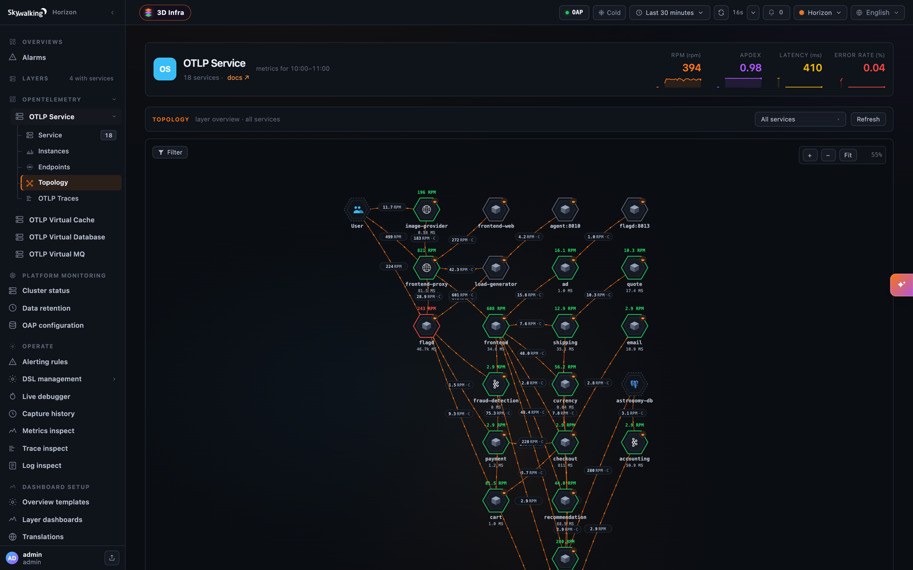

SkyWalking APM 11.1.0 is released. Go to downloads page to find release tars.
Metrics and Topology from OTLP Traces
Applications instrumented with the OpenTelemetry SDKs no longer need a SkyWalking agent for service dashboards, topology and trace search. OAP stores OTLP traces as they arrive, and the new Trace Analysis Language (TAL) turns every span into service, instance and endpoint metrics, a topology, and dashboards for the databases, caches and message queues the services call. Point the OTLP exporter at the OAP, set service.layer=OTLP_GENERAL in the resource attributes, and the services show up under the new OTLP_GENERAL layer, with metrics named and counted the same way as the agent-based GENERAL layer.


Read OpenTelemetry Traces in SkyWalking for a one-command quick start with the OpenTelemetry Astronomy Shop, and the OTLP trace and trace analyzer docs for your own applications.
Also in this release
- AI agent conversations — the
AI_AGENTlayer stores what the AI Sessionizer lands and serves each conversation as one document, with the agent’s token, MCP and Claude Code metrics. - Server clusters — show a message broker, a database or a cache that clients reach at more than one address as one service. See server clusters.
- BanyanDB credentials and TLS CA hot-reload, without restarting OAP.
- OpenTelemetry Collector
hostmetricsas a source for Linux and Windows host and process monitoring. - LLM-as-judge evaluation for GenAI, with the results queryable in Horizon UI.
- Many metric corrections in the MAL rules for Kafka, RabbitMQ, PostgreSQL, MySQL, Kong, APISIX, Windows and Zabbix.
Upgrade notes
- OTLP traces are stored natively by default (
otlpTraceStorage: otlp). SetotlpTraceStorage: zipkinto keep the previous conversion to Zipkin. - Windows monitoring through windows_exporter requires windows_exporter
0.29.0or later. - The
SpanListenerSPI’sonOTLPSpan/onNativeOTLPSpangain aserviceNameparameter; an implementation of the old signature is no longer called. - A customized
mesh.oalneedsfilter(... >= 0)on the sidecar internal latency metrics, as the shipped one has, or the new-1values are averaged in. - The corrected Kafka, RabbitMQ, PostgreSQL and Zabbix metrics keep their old values before the upgrade, so those charts step at the upgrade.
Project
- Add the Envoy project’s NOTICE to
NOTICEand to the binary distribution’s NOTICE, for the Envoy proto files bundled inreceiver-proto.
OAP Server
- Add customizable LLM-as-judge support for AI evaluation, with OpenAI-compatible endpoint / model / API key configuration, and persist the results as queryable
GenAIEvaluationRecordrows. - Hot-reload the BanyanDB credentials from a new
secretsManagementFileinbydb.yml(SW_STORAGE_BANYANDB_SECRETS_MANAGEMENT_FILE), as the Elasticsearch storage does, so a rotation by a tool such as Vault applies without restarting OAP or interrupting in-flight requests. An incomplete file sends no credentials, so a mistake fails visibly withUNAUTHENTICATED. - Hot-reload the BanyanDB TLS trust CA at
sslTrustCAPath: a change rebuilds the gRPC channel, created before the old one is released, so a rotation no longer costs an outage. The new channel is not health-checked before the swap; the storage doc describes the old+new CA overlap procedure. - Fix
MultipleFilesChangeMonitorsilently disabling every file watch in the OAP: aConcurrentModificationExceptionduring a scan cancelled the shared scheduler task for good, after which no secrets file, keystore or TLS certificate was reloaded again. The registry is now copy-on-write. - Fix
MultipleFilesChangeMonitorignoring its watching period, so every watch re-read its files every 200ms. Rotated files are now picked up within the configured period, 10 seconds for every shipped watch. - Add BanyanDB trace tail sampling metrics to the BanyanDB self-observability layer (
otel-rules/banyandb/banyandb-trace-sampling.yaml), covering the sampler plugin chain’s pipeline, decision, fail-open and retention metrics. They stay absent on a cluster with no sampler configured. - Fix a cross-rule
CounterWindowkey collision in the v2 MAL engine: two rules reading one counter, filtering it withtagEqual(...)and summing the filtered label away computedrate()/increase()/irate()against each other’s values. About 25 shipped rules were affected, among them ActiveMQ GC counts, MySQLcommands_*/tps, the GenAI gateway token rates, four Envoycluster_*counters, APISIX bandwidth and BanyanDBnetwork_recv/network_sent. The window is now keyed by rule, counter name and labels; no rule changes were needed. - Fix
meter_rabbitmq_node_outgoing_messages_totalcounting auto-ackbasic.getdeliveries twice. - Add AI agent conversations landed by the AI Sessionizer: the
AI_AGENTlayer, thelal/ai-agent.yamlrule that stores Session Data and Session Flow files in a new BanyanDB grouprecordsAIAgent, theai-agent-conversationmodule that folds a conversation into oneasz.viewdocument, thelistConversationsGraphQL query, and two streamed HTTP routes for the view and the session files. The document carries the session’s workspace changes and provider bodies, and the default-onotel-rules/ai-agent/rule set takes the agent runtime’s metrics from the Sessionizer and from Claude Code’s own exporter. Ingest and reads are bounded bymaxFileBytes(15 MiB),readWindow(16) andmaxResponseBytes(100 MiB). - Support querying Zipkin traces from the BanyanDB cold stage through the Zipkin HTTP API with a new optional
coldStageparameter; the by-id lookups also gainendTsandlookback. Existing Zipkin clients keep working unchanged. - BanyanDB: a query without a time range now covers everything the hot/warm stages retain instead of the last 24 hours, so trace lookups by id, including Zipkin and TraceQL, find traces older than a day.
queryTracesnow rejects a condition with neitherqueryDurationnortraceId. - Fix MySQL, PostgreSQL and H2 reading only the first day’s table of a time range shorter than a day that crosses midnight, which left the newer day’s rows out of every time-ranged read after each midnight.
- Fix a minute of metrics on BanyanDB losing the points of an earlier persistence round, seen as the first minute of a burst of OTLP metrics vanishing right after boot. A persistence round now completes only when every write of it is acknowledged, and
endOfFlushforces the BanyanDB measure bulk out. - Fix BanyanDB bulk writes leaving futures pending when a write fails to build, so persistence rounds and runtime-rule removal end with an error instead of waiting indefinitely.
- Apply
httpMaxRequestHeaderSize(and the AWS Firehose receiver’smaxRequestHeaderSize) to HTTP/2 as well, the protocol the OTLP and gRPC-Web clients use. - Add a
noneprovider to theai-agent-conversationmodule (SW_AI_AGENT_CONVERSATION=none) to turn the AI agent conversation feature off. - Fix the OpenTelemetry receiver folding a request that carries several minutes of points into one minute; a request is now analysed a minute at a time.
- Fix the runtime-rule sync tearing down and reloading every bundled MAL and LAL rule on its first pass after each boot, which dropped up to a persistence round of metrics from each rule set on every restart.
- Open every port that takes requests only after the boot is complete, through a new
ModuleProvider.notifyBootCompletedhook, so readiness probes that check a port mean what they say. - Fix the Elasticsearch storage failing every event query with a layer condition (
number_format_exception), which broke Horizon UI’s per-service events popout. - Store OTLP traces natively.
receiver-otelgainsotlpTraceStorage: otlp, the new default, which keeps each span as theResourceSpansit arrived in (BanyanDB groupotlpTrace), and the TraceQL module gains an/otlpdatasource that serves them to Grafana Tempo.otlpTraceStorage: zipkinkeeps the previous conversion to Zipkin. - Bring the TraceQL module closer to the Tempo API: span sets list only the matched spans,
serviceStatsis filled,span.http.status_codefilters, the tag endpoints honourscopeandlimit, tag lookups filtered byqnarrow Grafana’s dropdowns, and/api/metrics/query_rangeand/api/metrics/queryanswer501 Not Implementedinstead of a200Grafana cannot parse. - Refuse unsupported TraceQL with
400instead of dropping the predicate and returning unfiltered traces, and leave out a trace none of whose spans satisfies every condition. Every search-result span carries astatusattribute. - Support the OpenTelemetry Collector
hostmetricsreceiver as an alternative source for Linux and Windows host monitoring, mapped to the samemeter_vm_*/meter_win_*metrics plus a few only it provides, and add per-process metrics in the default-onprocess-hostmetrics-linuxandprocess-hostmetrics-windowsrules. Reference Collector configurations are in the docs. - Windows monitoring through windows_exporter now requires windows_exporter
0.29.0or later: the memory rules read thememorycollector, since0.31.0removed the metrics they read. Also fixmeter_win_cpu_total_percentagecounting overlapping CPU modes twice. - Fix no Linux or Windows host service being created from an OpenTelemetry Collector
0.127.0or later, which sends the host asserver.address. - AI agent conversations adopt AI Sessionizer
130601c: MCP server calls are stored and listed undertool_executions, and the newotel-rules/ai-agent/mcp_endpoint.yamlgives one endpoint per MCP server and tool with call, outcome and duration metrics. - Fix the Elasticsearch
BulkProcessortreating a bulk write as successful whenever the HTTP status was 200, even when items were rejected, such as a 429 when an index goesread_only_allow_deleteat the flood-stage disk watermark. Rejected requests now fail, summarized in one ERROR line per_bulkrequest; one chunk’s result no longer completes the whole flush, and a request whose bulk failed to build no longer hangs a persistence round. - AI agent conversations adopt AI Sessionizer
6691c36and can withhold what the runtime sent the model: thehidesetting (SW_AI_AGENT_CONVERSATION_HIDE) masks the system prompt and the tool schemas from every reader as a conversation is served, while the storage keeps every file whole. - Fix endpoints registered from logs, virtual MQ spans, cross-thread references and Cilium Hubble missing from
findEndpointqueried with a time range, as they never setlast_ping. - Add
alarm.default.httpTimeout(SW_ALARM_HTTP_TIMEOUT, 12 seconds), a deadline covering the whole HTTP request of every HTTP-based alarm hook, so an endpoint that stalls while sending the body can no longer hold the alarm delivery thread. - AI agent conversations adopt AI Sessionizer
aa67971: a segment is an activity window, and the document drops the fields the Sessionizer stopped writing. - AI agent conversations show where a model call’s history changed, as the
history.changesteps the AI Sessionizer draws. - AI agent conversations follow the AI Sessionizer’s id escaping and round rules.
- Add the Trace Analysis Language (TAL), a compiled DSL in the new
trace-analyzermodule that turns OTLP spans into metrics, topology and records, in both OTLP trace storage modes and ahead of the receiver’s head sampling. The shippedtal/otlp-general.yamlanalyzes the spans whose resource carriesservice.layer=OTLP_GENERALinto the newOTLP_GENERALlayer, named and counted like the agent path’score.oalmetrics, plusOTLP_VIRTUAL_DATABASE,OTLP_VIRTUAL_CACHEandOTLP_VIRTUAL_MQfor what the services call, aUsernode and slow statements. An address-named peer folds onto its service by pairing a client span with its child server span, which learns an alias keyed by the caller and the address it dialed; an address ingateways.ymlis drawn as aVIRTUAL_GATEWAYnode. New settingstalFiles,dedupWindow,dedupCapacityandpairingSamplePercent. - Fix the
maxandminmeter functions keeping the first value when merging, andlatestLabeleddropping label sets, whenever an entity’s samples arrived in more than one batch. - Fix the OTLP/HTTP JSON trace endpoint decoding the hex
traceId,spanIdandparentSpanIdas base64. - Fix the heatmap query failing on a meter histogram bucket bound beyond an int, such as an OTel histogram’s
+Infbucket. - Cut the slow statements a LAL
SlowSQLoutput writes to the 2000 characters of thetop_n_database_statementcolumn, as the agent path does. - Fix a UI template update on BanyanDB leaving a disabled template disabled;
PUT /ui-management/templatesnow re-enables it on every storage. - Fix Elasticsearch metric reads locating indices by
superDatasetDayStepwhile metrics are rolled bydayStep, which returned nothing or part of the range when the two differ. - Read the Kubernetes and Istio metadata used by Envoy ALS
k8s-mesh, the eBPF access log, MALretagByK8sMetaand the MAL process names in the background instead of on the analysis thread, so a slow or unreachable API server can no longer hold gRPC handler threads and exhaust OAP’s memory. MAL waits up tocore.default.malMetadataReadTimeout(2 seconds); new settings tune the read queues, refresh, cache and not-found retry periods, and failed reads log one summary instead of a line each. - Fix the Elasticsearch Zipkin trace search listing over 20,000 daily index names when the query starts at or before the epoch.
- Fix Elasticsearch reads of a metric a peer OAP reinstalls without a schema change, with
logicShardingenabled. - Fix a service instance dropping out of a time-ranged instance list when a record carrying an older minute updates it;
InstanceTrafficnow keeps the latestlast_ping. - Fix eBPF access-log timestamps losing sub-second precision, which quantized short mesh HTTP latency to 0 or 1000ms.
- Fix the Envoy ALS sidecar internal latencies dropping whole seconds, and leave the internal response latency out when the access log lacks the timing it is computed from.
- Sync the Envoy access log proto with Envoy v1.40.0, and leave out the internal latencies the access log cannot measure, such as of a retried or hedged request; the adapters report them as
-1andmesh.oalfilters them out withfilter(... >= 0). - Fix OAL comparison filters on
longordoublefields, such asfilter(sideCar.internalRequestLatencyNanos >= 0), failing to compile. - Add
ZIPKINto the GenAI evaluation record’straceRef.type, so the type names the store holding the judged span. - Fix the Zabbix receiver dropping the sub-second part of agent sample times.
- Fix expired records never being dropped on receipt in
RecordStreamProcessor. - Fix Kong and APISIX latency percentiles being about 1000 times too high.
- Fix the service topology drawing a service as a different one when its name equals a network address alias.
- Add
receiver-otel.otlpServiceGroupKeys(SW_OTEL_RECEIVER_OTLP_SERVICE_GROUP) to group OTLP services asgroup::nameby a resource attribute such asservice.namespaceork8s.namespace.name, in the trace analysis, the stored spans and the OTLP logs. This changes theSpanListenerSPI:onOTLPSpan/onNativeOTLPSpangain aserviceNameparameter. - Fix pprof task log records treating the task duration as seconds instead of minutes.
- Fix the Kafka broker
request_queue_time_ms,remote_time_ms,response_queue_time_msandresponse_send_time_msmetrics reporting observation rate instead of latency. - Fix the Kafka broker throughput and topic metrics: per-topic bytes in read bytes out, the broker totals were counted twice, the topic metrics carried an extra
topic=""series, and the network processor idle percent was a rate. - Fix the RabbitMQ singleblock allocator meters reading multiblock carriers.
- Fix the PostgreSQL temporary-files rate reading temp bytes.
- Fix the Zabbix agent filesystem usage percentage reading inode usage; it now reads
vfs.fs.size[/,pused], which is added to the required item keys. - AI agent conversations read a tool call as its arguments, as the AI Sessionizer does.
- Add the
OTLP_MESHlayer for service mesh sidecars that report over OTLP, such as Istio’s Envoy; their spans are stored and searchable but not analyzed. - The OTLP service catalog and the stored spans keep each service’s
service.layer(UNDEFINEDwhen absent), and a TraceQLqonresource.service.layeralone lists the services from the catalog. - Write a network address alias only when its mapping changes or every five minutes, about twelve writes an hour for a stable alias instead of about 140.
- Fix the RabbitMQ multiblock and multiblock-pool unused meters reporting the whole carriers size.
- Fix the RabbitMQ node publisher count, which now reads
rabbitmq_global_publishers, counted correctly from RabbitMQ 3.10.11 and 3.11.3. - Fix the MySQL max-connections connection-errors metrics filtering a mistyped label, which left the chart empty.
- Add server clusters,
server-clusters.ymland the dynamic configuration itemcore.default.serverClusters, to show a broker, a database or a cache reached at several addresses as one service, in the native trace analysis and in TAL throughfindServerClusterName. Empty by default. - Add HTTP alarm hook delivery self-observability metrics,
alarm_http_delivery_total,alarm_http_delivery_status_totalandalarm_http_delivery_latency_seconds, with the reason a delivery failed, plus OAP self-observability MAL rules and Grafana charts. A 2xx response carrying a DingTalk, WeCom, Feishu or WeLink error code is now logged as a failure.
UI
- Add a Virtual GenAI evaluation-record page and evaluation-score chart in Horizon UI, showing each evaluation’s result, level, reason, judge model, timestamp and trace link, and the
gen_ai_model_evaluation_score_ppmtrend.
Documentation
- Fix the Windows monitoring doc’s example Collector configuration, which used the removed
loggingexporter. - Document the BanyanDB trace tail sampling metrics in the BanyanDB self-observability dashboard catalog.
- Rename Envoy AI Gateway to Agent Router in the monitoring docs; the layer, routing tag, rule file and metric names are kept.
- Give the AI agent metrics a catalog naming the source of each, the AI Sessionizer or Claude Code’s own exporter.
- Fix the OpenTelemetry receiver page’s metrics handler name,
otlp-metrics, and its description of which rule-file nodes it reads.
All issues and pull requests are here